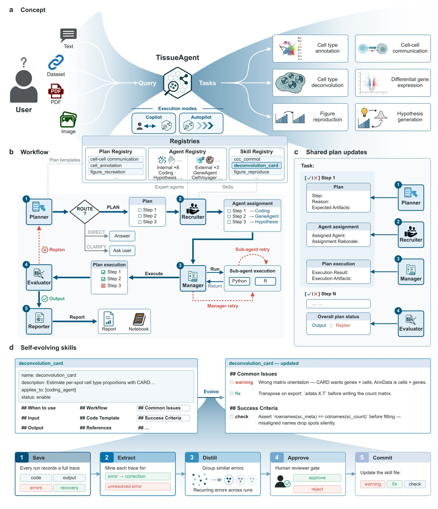
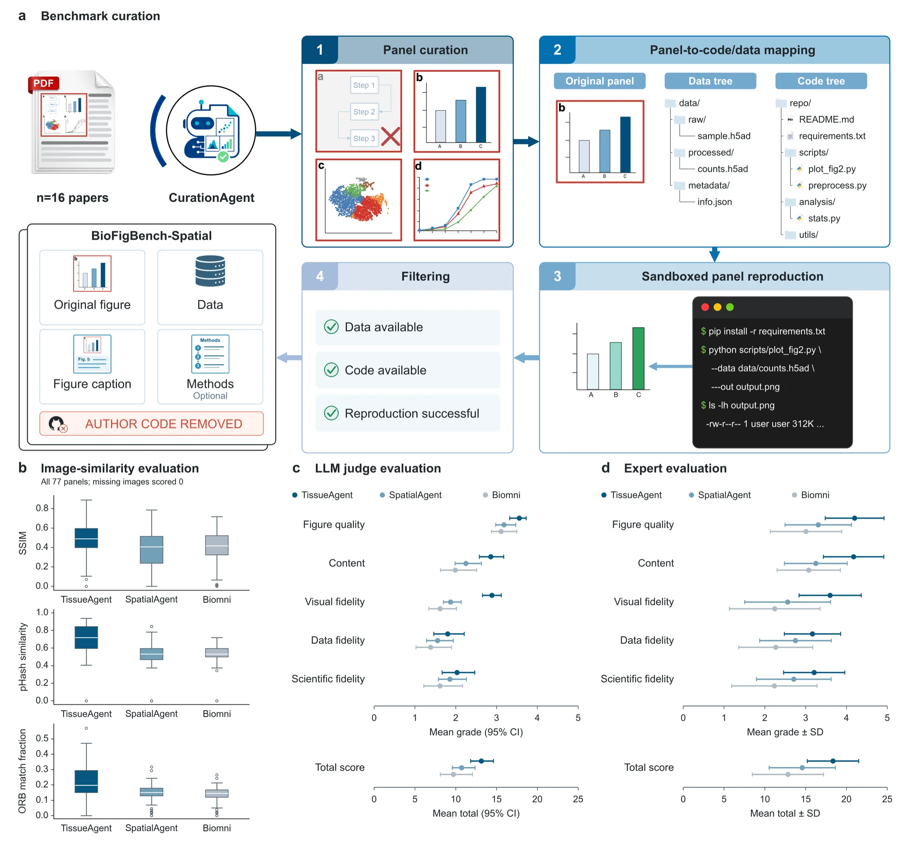
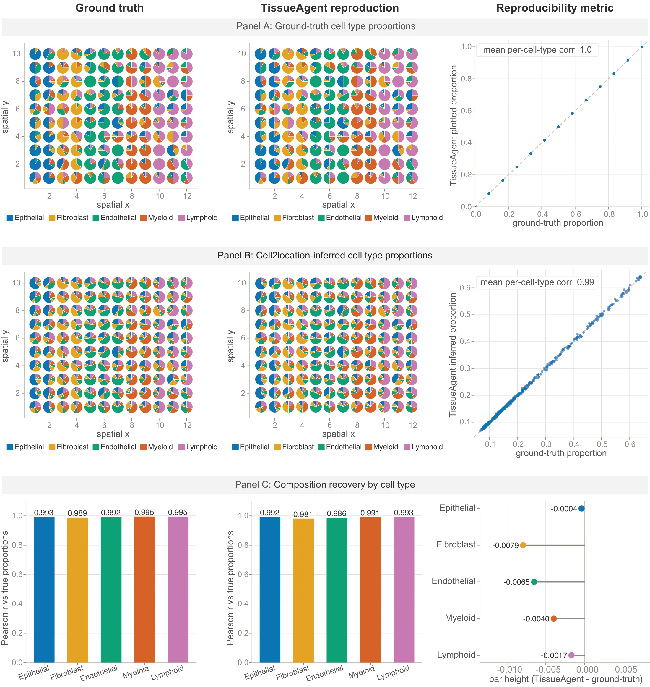
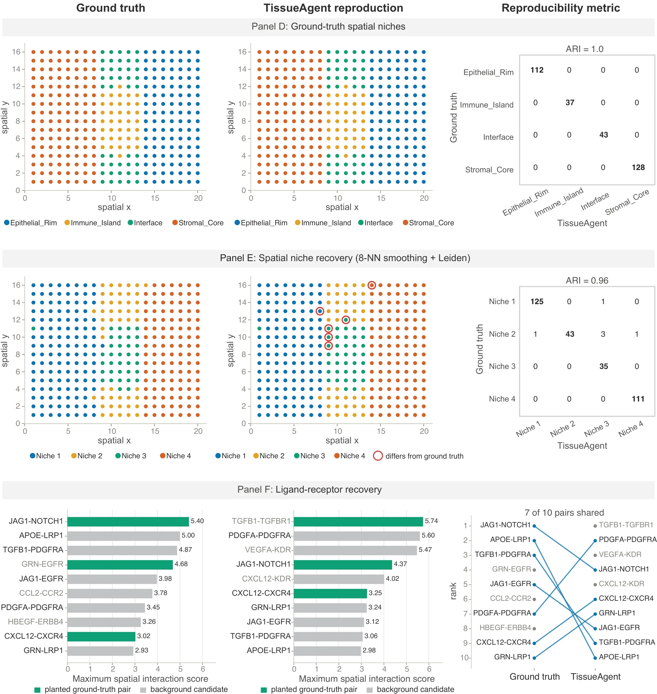

TissueAgent: A Role-Based
Multi-Agent Framework for Reproducible Spatial Transcriptomics
Workflows
TissueAgent: A Role-Based
Multi-Agent Framework for Reproducible Spatial Transcriptomics
Workflows
Abstract
Spatial transcriptomics (ST) profiles gene expression in situ, but analysis remains slow and hard to reproduce because workflows span heterogeneous platforms, file formats, and toolchains and often require substantial domain expertise and programming effort.
Here we present TissueAgent, a role-based multi-agent framework that turns open-ended natural-language ST requests and multimodal inputs (data, PDFs, images) into auditable, runnable workflows. A single evolving plan coordinates specialized agents and records rationales, step status, and artifact links, enabling transparent provenance and targeted replanning. TissueAgent uses self-evolving skills to distill execution traces, errors, and recovery strategies into reusable procedural knowledge, allowing workflows to improve across runs. By separating planning, recruitment, execution, evaluation, and reporting, TissueAgent is designed to improve reliability across heterogeneous, multi-stage analyses.
Across diverse ST datasets, TissueAgent generates reproducible notebooks and supports cell type and niche annotation, cell-type deconvolution, and cell-cell communication analysis, outperforming available baselines on key spatial tasks. In a reproduce-then-apply evaluation, TissueAgent reconstructs figure panels and recovers their underlying workflows from published studies using only text and images, without author-provided code, and transfers the recovered workflows to new datasets. TissueAgent also integrates external domain agents to support collaborative analysis. Together, TissueAgent enables reproducible end-to-end ST analysis and workflow reuse, helping bridge the gap between reading a spatial study and reusing its workflow in practice.
Framework Overview

Method
Modeled on how a biotech team handles an ST analysis request, TissueAgent plans the workflow, recruits specialists, coordinates execution, verifies intermediate and final outputs, and returns validated results. Implemented in LangGraph, it includes five orchestration agents and a suite of specialized expert agents, both internally developed and external, such as GeneAgent. A Copilot mode lets users inspect and interact with the workflow during execution; an Autopilot mode carries it out with minimal user intervention.
Planner
Converts the user request into a global plan with explicit steps and expected artifacts. Requests that can be answered immediately are handled directly, requests with insufficient information are returned to the user for clarification, and requests requiring multi-step analysis enter the planning workflow.
Recruiter
Assigns each step to an expert agent from the Agent Registry, together with relevant skills, and records the assignment rationale.
Manager
Oversees execution and determines whether each step succeeds, fails, or should be skipped. Expert agents operate in ReAct-style loops under Manager supervision, computing in Python and R and returning execution status, generated artifacts, and summaries of what succeeded or failed.
Evaluator
Checks whether intermediate and final outputs satisfy the user request, and routes the workflow either back to the Planner for targeted replanning or forward to the Reporter.
Reporter
Returns a concise summary together with a fully reproducible Jupyter notebook with explicit artifact paths and provenance.
Registries
Three complementary registries provide reusable knowledge at different levels of abstraction. The Plan Registry stores workflow templates from previously defined analyses, which the Planner retrieves when constructing a new plan. The Agent Registry catalogs internal and external expert agents and their capabilities, allowing the Recruiter to select an appropriate specialist for each step. The Skill Registry stores task-specific execution knowledge that is assigned alongside expert agents.
Structured Plan Updating
All agents read from and write to a single evolving plan, which serves simultaneously as a coordination protocol, shared memory, and provenance layer. The Planner records each step's name, rationale, and expected artifacts; the Recruiter appends the assigned expert agent and assignment rationale; the Manager records step status as succeeded, failed, or skipped, summarizes outcomes, and links generated artifacts to the relevant steps. The shared plan and role separation enable three layers of failure recovery: expert agents resolve local execution errors within their own loops, the Manager reruns a step whose approach is ineffective with revised inputs, tools, or strategies, and the Evaluator triggers replanning when the global plan falls short of the request.
Self-Evolving Skills
Whereas structured plan updating supports adaptation within a run, self-evolving skills accumulate reusable execution knowledge across runs. Execution experience is converted into persistent procedural knowledge through a Save–Extract–Distill–Approve–Commit cycle, and automated verification ensures that changes only ever occur in natural-language knowledge files.
-
1
Save
Every run records a full trace: code, outputs, errors, and recovery.
-
2
Extract
Mine traces for error–correction pairs, unresolved errors, and avoidable cost.
-
3
Distill
Group recurring errors across runs into candidate skill and plan updates.
-
4
Approve
A human reviewer gate approves or rejects each candidate.
-
5
Commit
Update the skill file with warnings, fixes, and checks.
Experiments
We evaluate TissueAgent in three settings: reproducing published ST figures and workflows and transferring them to new data, collaborating with externally developed agents, and end-to-end ST analysis across cell type and niche annotation, cell-type deconvolution, and cell-cell communication.
Figure Reproduction on BioFigBench-Spatial
BioFigBench-Spatial evaluates whether agents can reconstruct published ST analyses from data, reference figures, and textual descriptions. Starting from 150 candidate panels in 16 published papers, CurationAgent identifies eligible panels, maps them to author-provided code and data, and verifies their reproduction in a sandboxed environment, yielding 77 panels. Each task provides the original figure, data, caption, and optional Methods text, while the authors' code is withheld. Across the 77 panels, TissueAgent achieved higher median SSIM, pHash, and ORB similarity than SpatialAgent and Biomni. With two LLM judges, it scored a mean of 13.14 out of 25, compared with 10.72 for SpatialAgent and 9.72 for Biomni, and five domain experts gave it the highest mean score in every dimension (18.35 ± 3.15 versus 14.58 ± 4.06 and 12.83 ± 4.37). Per-panel results are on the figure reproduction page.

Reproduce-then-Apply · Lohoff et al. seqFISH → Chen et al. Stereo-seq
Papers often provide data and method descriptions but not runnable code. In the reproduce phase, TissueAgent reconstructs figure panels from a reference study using only text, reference images, and the original dataset; in the apply phase, it transfers the recovered workflow to a new dataset. We selected five panels of varying complexity from Lohoff et al., spanning UMAP visualization of gastrulation atlas and seqFISH cells, spatial cell-type maps, germ-layer organization, cell–cell contact patterns, and spatial transcriptional heterogeneity, and compared TissueAgent with Biomni and SpatialAgent. The reproduced spatial maps recovered the major tissue compartments and germ-layer distributions.
As a stress test, we used panel 2e, a violin plot of gene-wise t-statistics across cell types that depends on a custom spatial heterogeneity score. Each agent received the dataset, a reference image, a textual description, and a screenshot of the relevant Methods section, and had to recover the underlying regression model and intermediate computations before plotting. Across the same 20 matched cell types, TissueAgent achieved the highest Spearman rank correlation with the reference cell-type ordering (ρ = 0.914), followed closely by SpatialAgent (ρ = 0.904) and then Biomni (ρ = 0.805). Combining LLM-based judging with expert assessment, TissueAgent achieved significantly higher aggregate scores than SpatialAgent and Biomni across all reviewers.
Transferred to a Stereo-seq mouse embryo dataset from Chen et al., the recovered workflow recreated all five panels despite the change in technology and data format. Key biological patterns were preserved: surface ectoderm localized to the embryo boundary, mirroring the ectodermal enrichment along the tissue periphery reported by Lohoff et al., and spinal cord and brain again showed strong within-cell-type spatial heterogeneity. The transferred pipeline also surfaced observations not emphasized in the original Chen et al. study, such as AGM cells preferentially co-localizing with connective tissue and gut tube.
In a second case study on high-grade serous ovarian cancer from Yeh et al., TissueAgent reproduced panels from the CosMx SMI discovery dataset and transferred the recovered analyses to the 10x Visium validation dataset, with the published validation figures withheld. The transferred analyses recovered the reported patterns, including the transcriptional separation of CD8+ T cells in malignant-cell-rich versus malignant-cell-poor niches and the association between T/NK-cell infiltration and activation of the M-TIL program in malignant cells.

Controlled Reproduction with Simulated Ground Truth


Collaborating with External Agents (TissueAgent × GeneAgent, GeneGPT, CellVoyager)
The Agent Registry catalogs internally developed agents alongside externally developed ones, each with its role, capabilities, and I/O schema, so the Recruiter can route each subtask to the most appropriate specialist. On the developing human heart MERFISH dataset, we asked whether atrial fibroblasts in the AVN/AV ring cellular community exhibit a distinct developmental program. The Coding Agent performed differential expression, the external GeneAgent interpreted the marker genes as consistent with Cardiac Development and Remodeling, and the Hypothesis Critic Agent assessed the claim from the combined evidence, supporting a specialized, ECM-rich, conduction-associated state.
Recruitment through TissueAgent preserves each external agent's standalone performance. Recruited GeneGPT reached 79.1% overall accuracy on the 450 GeneTuring questions (77.6% when run directly), and recruited CellVoyager matched or exceeded direct CellVoyager on CellBench, with the Recruiter correctly selecting and invoking it in all 150 workflows.

Common Spatial Transcriptomics Tasks
Beyond reproducing published studies, TissueAgent runs the routine analyses that make up most ST projects end to end: cell type and niche annotation, cell-type deconvolution, and cell-cell communication. For each task it inspects the data, selects or combines methods suited to it, tunes them, and checks the results before reporting. Against general-purpose and ST-specific agents (Biomni, SpatialAgent, and STAgent), it more closely recovered ground-truth cell types and anatomical niches, achieved the strongest deconvolution scores while being the only agent to complete every run, and produced the most spatially coherent, reproducible, and reliable ligand-receptor rankings.
Cell Type and Niche Annotation
For cell-type annotation, TissueAgent assesses the biological context, expression state, and method-suitability evidence to select one of three strategies: Harmony-based reference transfer from CZI CELLxGENE, pretrained CellTypist models, or reference-free, marker-based annotation with GPTCellType. For niche annotation, it configures UTAG from the data, summarizes each niche's cell-type composition and spatial features, and assigns an anatomical label with a brief biological justification.

Cell-Type Deconvolution
When no method is specified, an LLM-based router examines the structure of the spatial dataset, its compatibility with the reference, count representation, spatial coordinates, dataset scale, and computational resources, then selects among cell2location, NNLS, Tangram, CARD, SD2, and STdeconvolve and tunes dataset-specific hyperparameters on pseudospot trials. On Visium left-atrial sections from a human cardiac atlas, TissueAgent retrieved a matched CELLxGENE reference of about 486,000 cells, and marker genes correlated significantly more strongly with the inferred abundances than background genes. In quantitative benchmarks it achieved the strongest composite score on Visium DLPFC, where it selected and tuned cell2location, and on MERFISH-derived spots, where its router selected NNLS at every resolution, and it was the only agent to complete every run.
Cell-Cell Communication
Because no single ligand-receptor scoring method is authoritative, TissueAgent runs a consensus ensemble of LIANA+, stLearn, COMMOT, and decoupleR and aggregates within-method percentile ranks into one consensus ranking. On three datasets derived from SpatialCCCbench, it achieved the highest spatial coherence and the strongest cell-type adjacency of any agent, and was the most reproducible and reliable (Figure 6f).